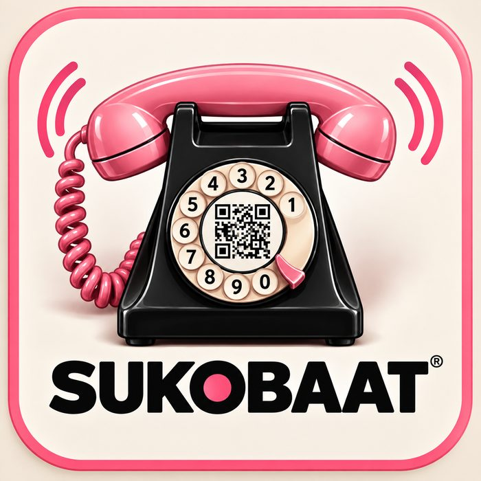
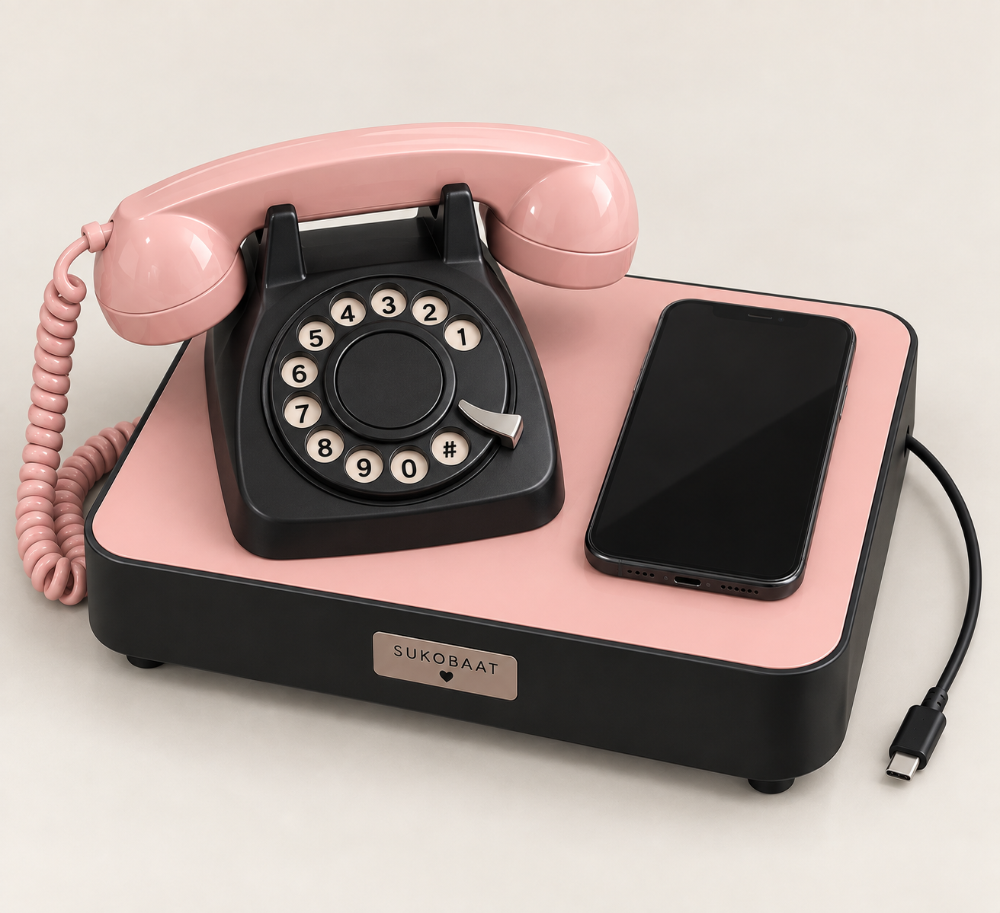

Genèse
Alors, pourquoi j'ai fabriqué cet objet pour toi ?
Au départ, franchement, rien de tout ça n'était prévu.
Juste une pub pour un gadget. Mon téléphone sait très bien que j'en suis friand, alors évidemment il m'en propose à longueur de journée.
Et là…
Un combiné rose ? Comment passer à côté !
Je t'ai imaginée tout de suite avec, chez toi, un jour de télétravail, au téléphone.
Ça aurait pu s'arrêter là. Acheter le gadget, te l'offrir, rigoler cinq minutes et voilà.
Sauf que… va savoir pourquoi, l'idée est restée.
Et puis une autre est venue derrière. Puis une autre.
Je me suis mis à penser à ton boulot, et surtout à ce que tu aimes dedans : les gens, les rencontres, les échanges.
Ce métier, tu en as eu le goût en regardant ton père le faire.
Et à son époque, forcément, on le faisait autrement. Pas de portable. Pourtant, le téléphone était déjà indispensable.
Il avait simplement une place : le bureau.
On appelait, on décrochait, on prenait un rendez-vous, on discutait… puis on raccrochait et on allait voir les gens.
Le téléphone faisait partie du boulot, mais il ne prenait pas toute la place.
Et quelque part, j'avais envie que tu retrouves un peu de cette façon de travailler les jours où tu es chez toi.
C'est là que mon petit combiné rose a commencé à devenir autre chose.
Je me suis dit qu'on devait pouvoir garder tout ce que ton iPhone sait faire aujourd'hui, mais retrouver cette façon-là de téléphoner.
Un vrai téléphone de bureau. Mais avec ton iPhone.
L'idée était là.
Avec quand même un léger problème : je n'avais absolument aucune idée de comment fabriquer cet objet.
Mais les Rieu sont têtus. Et un peu cul-Rieu aussi.
Alors j'ai commencé à chercher.
Mon père, lui, aurait probablement passé des heures dans des bibliothèques, à fouiller dans des bouquins pour comprendre comment réaliser un objet pareil.
Je n'ai clairement pas sa patience.
Moi, j’ai la chance de pouvoir me faire aider par l’IA.
Alors j'ai posé des questions. Beaucoup de questions. J'ai essayé de comprendre, imaginé des solutions, changé d'avis, recommencé…
Et puis il n'y avait pas que la question de savoir comment le faire fonctionner.
Il fallait penser l'objet dans son ensemble.
À quoi il allait ressembler. Où poser l'iPhone pour qu'il fasse naturellement partie de l'ensemble. Comment retrouver le charme d'un vrai téléphone de bureau. Comment adapter ce fameux combiné rose par lequel toute l'histoire avait commencé.
J'ai fini par dénicher un vieux téléphone à cadran qui avait exactement ce que je cherchais : une vraie gueule de téléphone.
Et après, il a fallu faire rentrer le présent dans le passé.
Adapter le combiné, cacher l'électronique, trouver comment faire cohabiter tout ça et faire disparaître autant que possible toute la technique derrière l'objet.
Bref, penser chaque détail pour qu'à la fin, on ne voie plus vraiment tout ce qu'il y a derrière.
Et petit à petit, entre les idées, les recherches, les essais et quelques prises de tête, la pub pour un combiné rose est devenue l'objet que tu as maintenant devant toi.
Ton iPhone y trouve naturellement sa place, avec tout ce qu'il sait faire.
Et quand tu en as envie, SUKOBAAT lui redonne simplement ce qu'il a perdu avec le temps : une place sur le bureau, une vraie sonnerie et un combiné à décrocher.
Juste une autre façon de téléphoner.
Et j'espère surtout un petit plaisir en plus les jours où tu travailles de chez toi.
Je l'ai appelé SUKOBAAT.
Sukoon, pour le calme, la tranquillité, le fait de pouvoir poser ton téléphone, le laisser à sa place et continuer ta journée sans avoir à le garder avec toi.
Baat, pour la parole, la conversation, l'échange. Parce qu'au bout du compte, un téléphone sert quand même surtout à ça : parler à quelqu'un.
Et pourquoi je suis allé chercher ces deux mots du côté de l'Inde… ça, je pense que je n'ai pas besoin de te l'expliquer.
Je l'ai imaginé, conçu et bricolé pour toi.
Maintenant, j'espère surtout que tu vas le kiffer et t'en servir.
Et puis il fallait quand même que je laisse quelque part une petite phrase rien qu'à nous :
Il y a des fils qui ne se coupent pas.
Genèse
SUKOBAAT est né d’une idée simple : retrouver le plaisir d’un vrai téléphone de bureau sans renoncer à ce qu’un smartphone sait faire aujourd’hui.
Le point de départ était un combiné rose au charme rétro. Puis l’idée a grandi : lui redonner une vraie place, une sonnerie et un geste familier — décrocher, parler, raccrocher.
Le smartphone reste au cœur du système. Posé sur SUKOBAAT, il conserve tout ce qu’il sait faire. L’objet lui ajoute simplement une présence physique sur le bureau et une autre façon de vivre les appels.
Il a fallu faire cohabiter un ancien téléphone à cadran, un combiné adapté et une électronique discrète, avec une règle : laisser la technique disparaître autant que possible derrière l’objet.
Le nom SUKOBAAT vient de deux mots : Sukoon, pour le calme et la tranquillité ; Baat, pour la parole, la conversation et l’échange.
SUKOBAAT, c’est donc une autre façon de téléphoner : garder le présent, retrouver un peu du geste d’avant.
Mode d'emploi
DRIIIIING !
1 / 4

DRIIIIING !
DRIIIIING !
Pose ton iPhone sur SUKOBAAT.